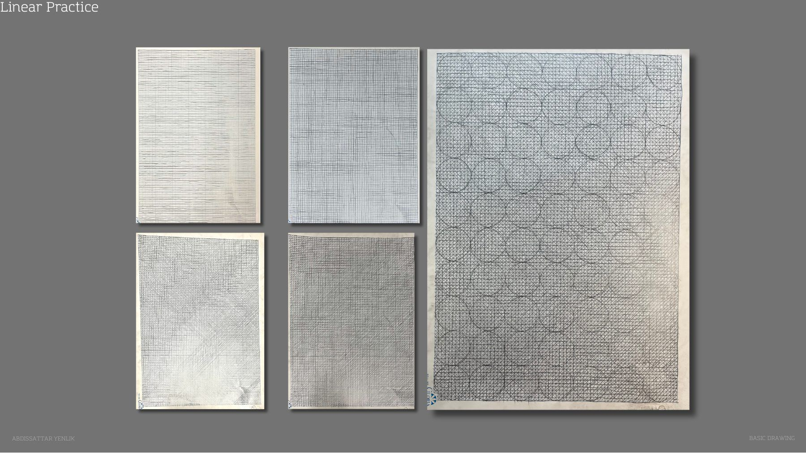
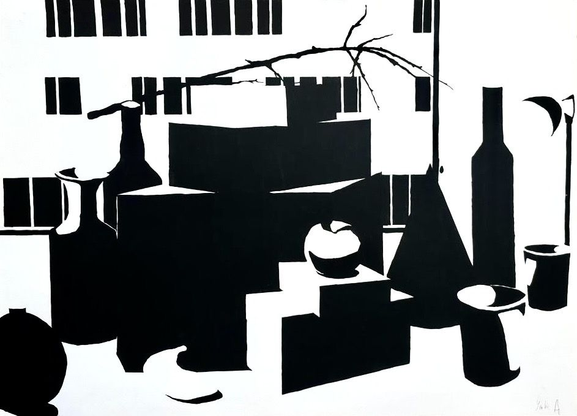
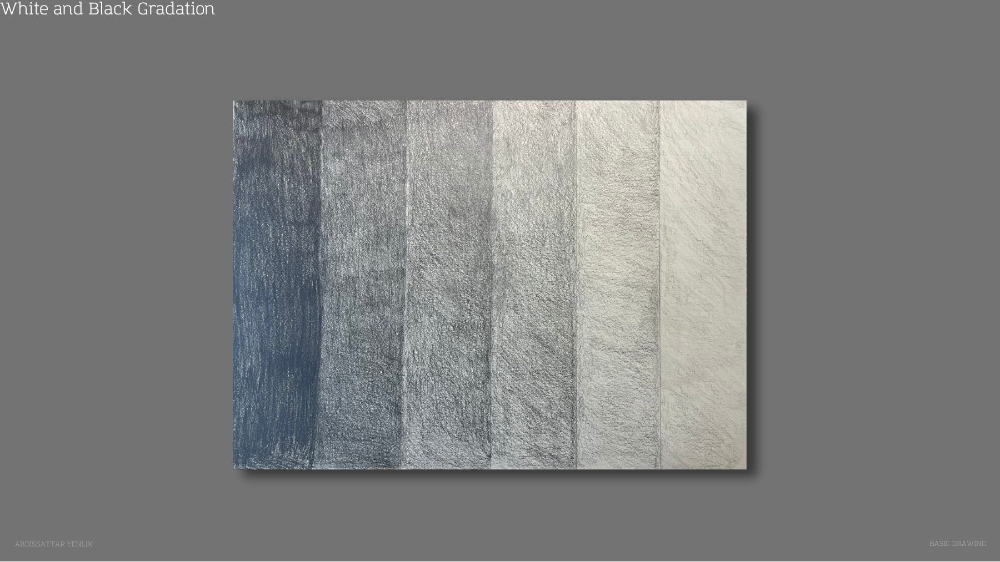
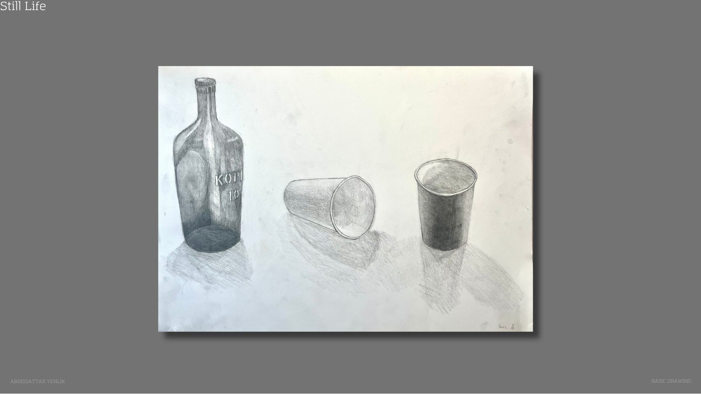
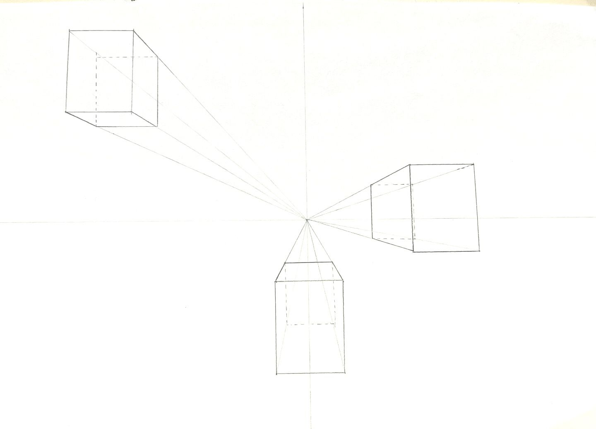
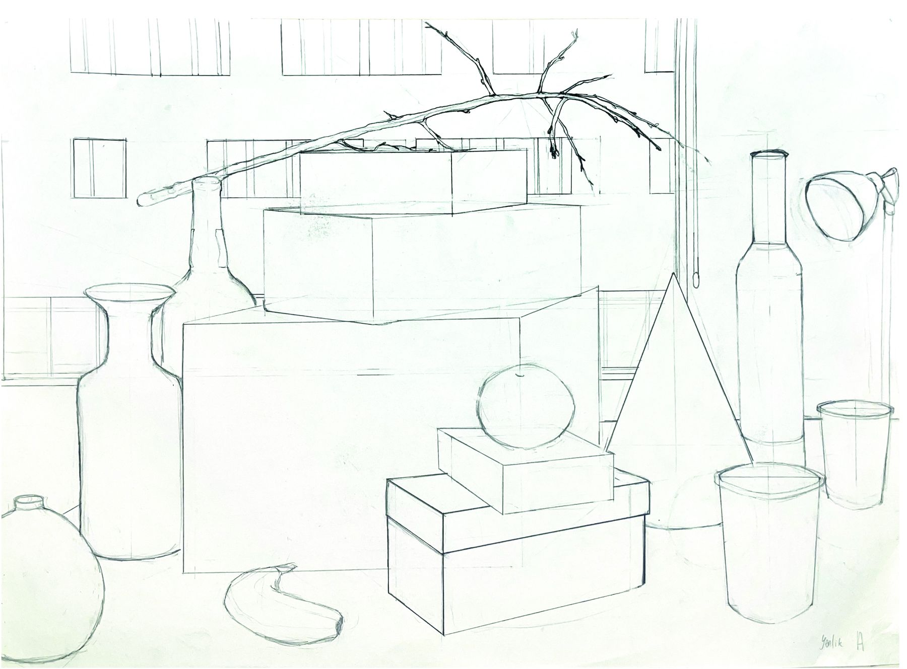
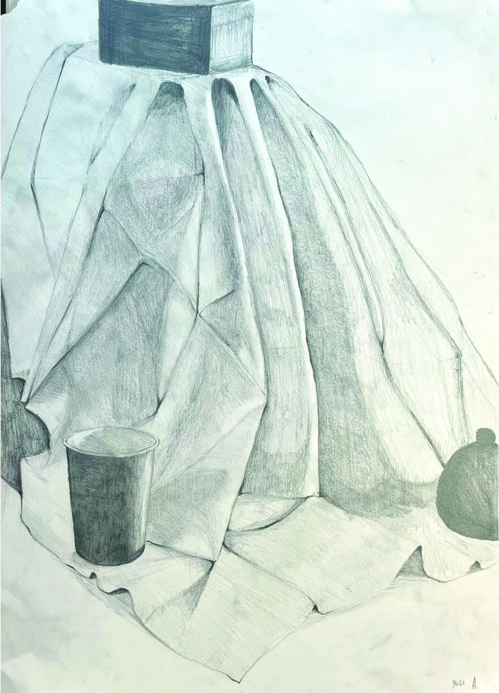
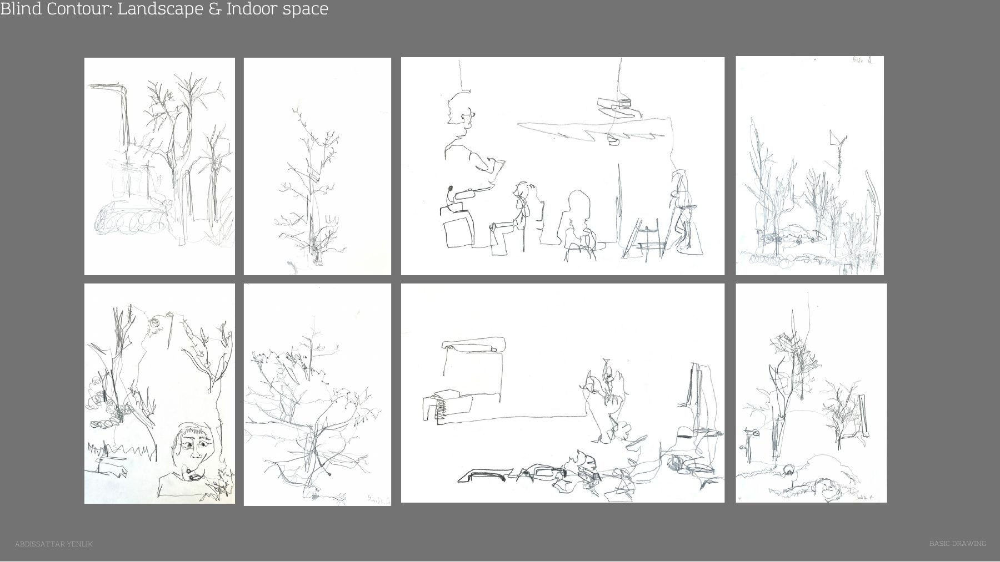
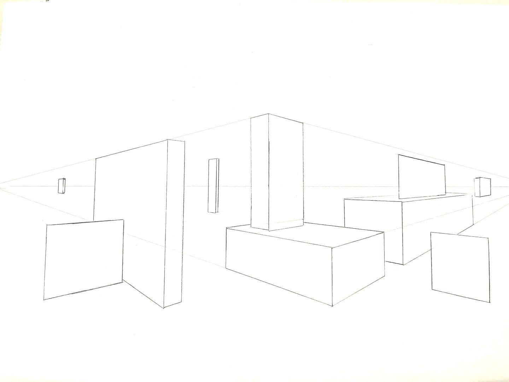

01
Linear practice
Line weight and density, repeated until even.

Line, tone, perspective and portrait

Overview
The foundations, drawn by hand: linear practice, blind contour, gradation, still life, perspective, self-portrait and a final composition.
Line weight and density, repeated until even.

Landscapes, interiors and faces drawn without looking at the page.


White-to-black gradation, then still life and drapery.


One- and two-point studies.


From line drawing to full tone.

A still life drawn in line, then resolved as positive and negative space.





Next, 14
Illustration